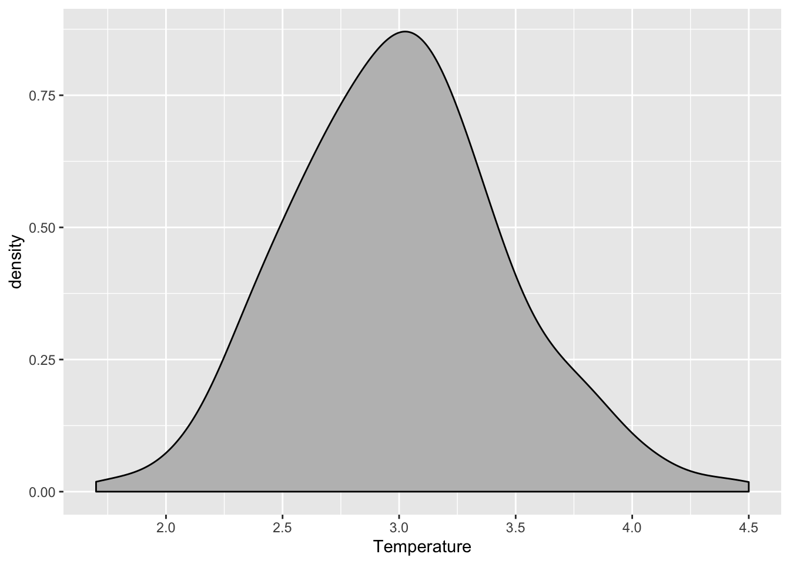
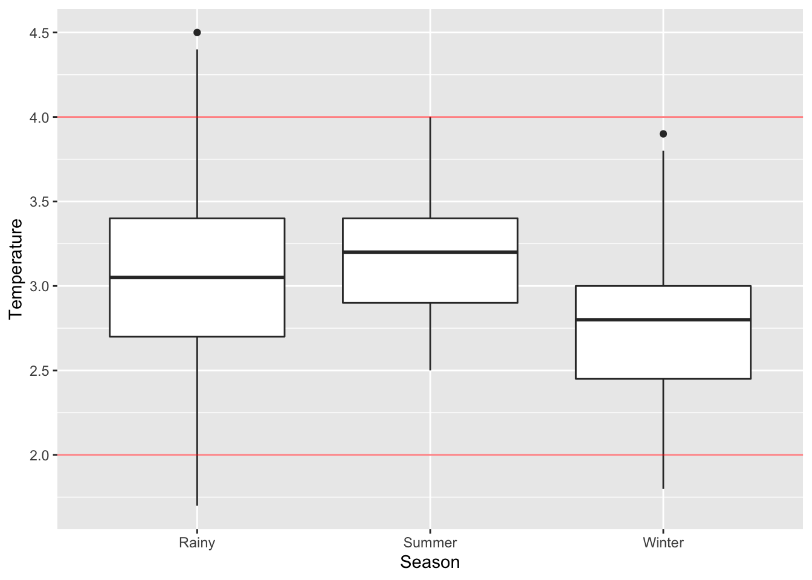
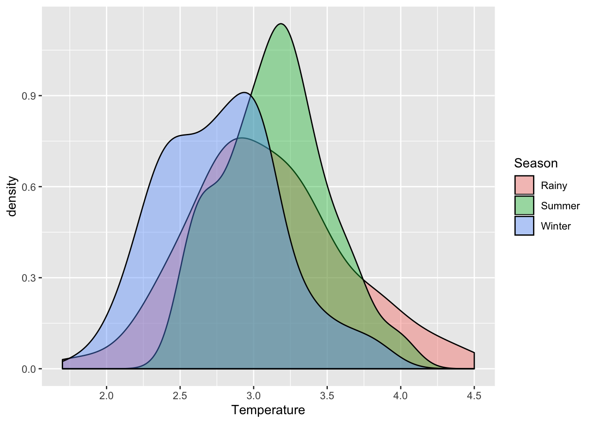
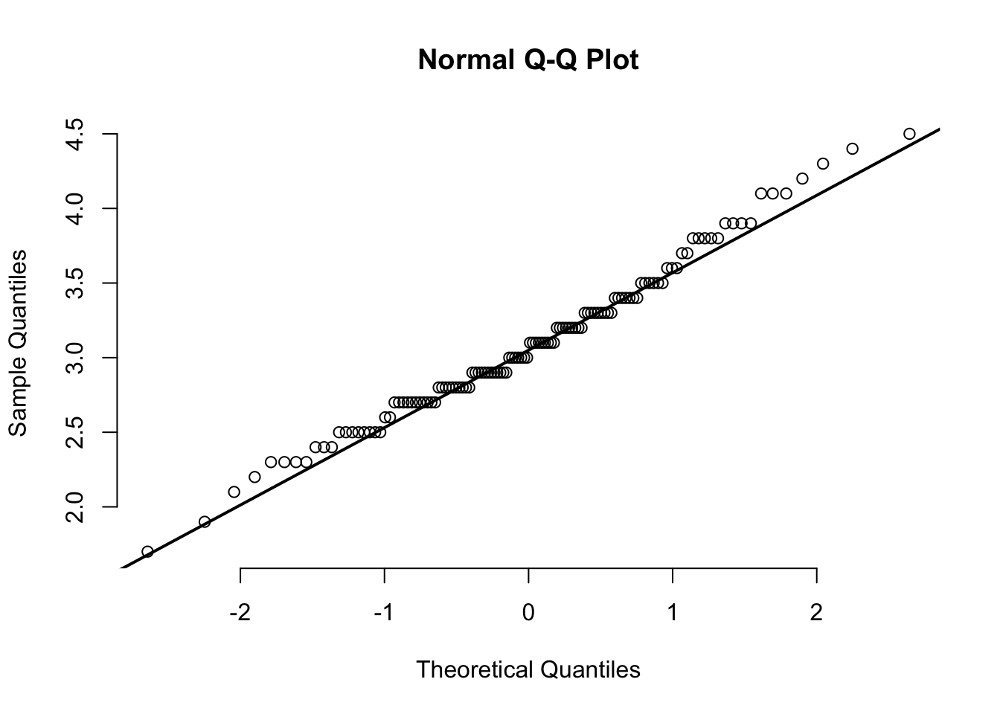
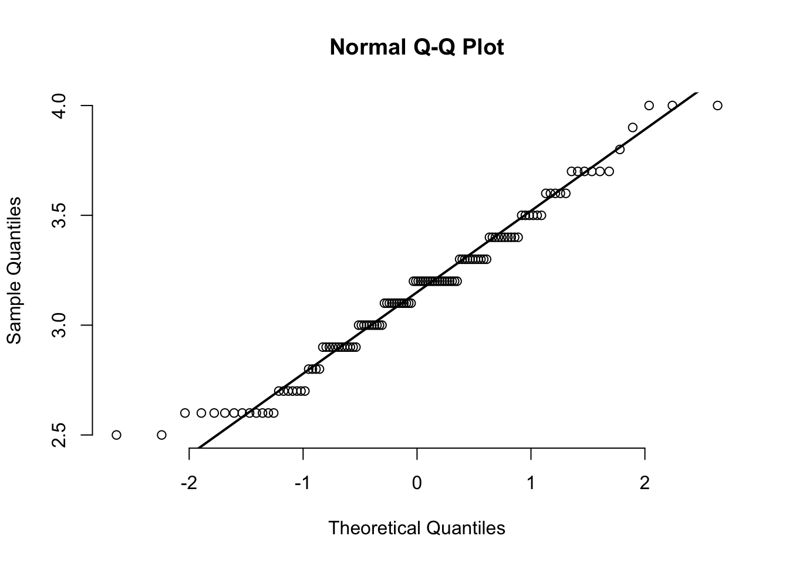
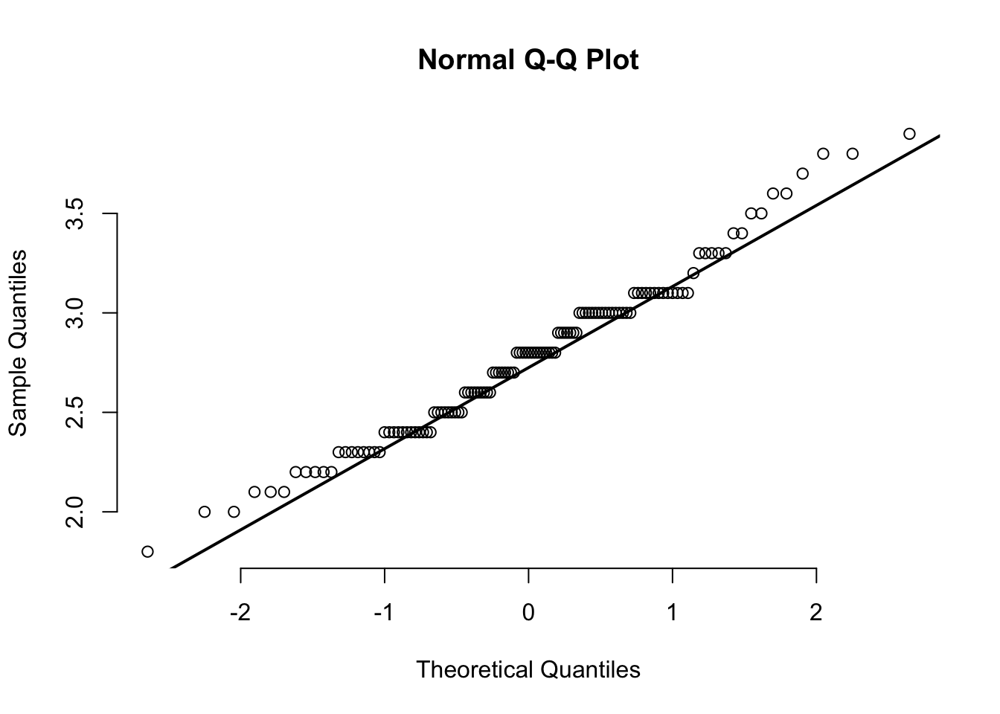

Cold Storage started its operations in Jan 2016. They are in the business of storing Pasteurized Fresh Whole or Skimmed Milk, Sweet Cream, Flavoured Milk Drinks. To ensure that there is no change of texture, body appearance, separation of fats the optimal temperature to be maintained is between 2—4°C.
In the first year of business, they outsourced the plant maintenance work to a professional company with stiff penalty clauses. It was agreed that if it was statistically proven that the probability of temperature going outside the 2—4°C during the one-year contract was above 2.5% and less than 5% then the penalty would be 10% of AMC (annual maintenance contract). In case it exceeded 5% then the penalty would be 25% of the AMC fee.
The objective is to find proportion of milk temperature that exceed below 2°C or above 4°C and determine the penalty Cold Storage should impose based on the contract should the company exceed the limits.
library(pacman)
p_load(readr, dplyr, plyr, ggplot2, car, sjstats, multcomp, nortest, pwr, reshape2)CS.temp = read_csv("csv/Cold_Storage_Temp_Data.csv")## Parsed with column specification:
## cols(
## Season = col_character(),
## Month = col_character(),
## Date = col_double(),
## Temperature = col_double()
## )CS.tempsummary(CS.temp)## Season Month Date
## Length:365 Length:365 Min. : 1.00
## Class :character Class :character 1st Qu.: 8.00
## Mode :character Mode :character Median :16.00
## Mean :15.72
## 3rd Qu.:23.00
## Max. :31.00
## Temperature
## Min. :1.700
## 1st Qu.:2.700
## Median :3.000
## Mean :3.002
## 3rd Qu.:3.300
## Max. :4.500CS.temp$Season = as.factor(CS.temp$Season)
CS.temp$Month = as.factor(CS.temp$Month)
# Summarise the dataset.
summary(CS.temp)## Season Month Date Temperature
## Rainy :122 Aug : 31 Min. : 1.00 Min. :1.700
## Summer:120 Dec : 31 1st Qu.: 8.00 1st Qu.:2.700
## Winter:123 Jan : 31 Median :16.00 Median :3.000
## Jul : 31 Mean :15.72 Mean :3.002
## Mar : 31 3rd Qu.:23.00 3rd Qu.:3.300
## May : 31 Max. :31.00 Max. :4.500
## (Other):179# Standard deviation.
sd(CS.temp$Temperature)## [1] 0.4658319CS.temp.summary.season = ddply(.data=CS.temp, .variable= ~ Season, .fun=function(data) summary(data$Temperature))
CS.temp.summary.seasonThe overview includes the following:
dataset_detail = function(df) {
na_count = colSums(is.na(df))
# Details.
nulls_proportion = na_count / nrow(df) * 100
duplicated_nrows = nrow(which(duplicated(df)))
details = list(nulls_proportion, duplicated_nrows)
names(details) = c("nulls_proportion", "duplicated_nrows")
return(details)
}
CS.temp.details = dataset_detail(CS.temp)
CS.temp.details## $nulls_proportion
## Season Month Date Temperature
## 0 0 0 0
##
## $duplicated_nrows
## NULLggplot(data=CS.temp) +
aes(x=Temperature) +
geom_density(fill="grey")
ggplot(data=CS.temp) +
aes(x=Season, y=Temperature) +
geom_boxplot() +
geom_hline(yintercept=4., color="red", alpha=.5) +
geom_hline(yintercept=2., color="red", alpha=.5)
ggplot(data=CS.temp) +
aes(x=Temperature, fill=Season) +
geom_density(alpha=.4)
Data dictionary:
This dataset has 365 row. Each row refers to each date. The counts for each unique value of the Season variable is about 120 rows, which is quite balanced.
Assumption on the dataset:
The milk temperature is calculated based on average. Meaning even if one of the milk product’s temperature exceeds 2°C or 4°C, it will not considered a violation to the contract as long as the average is within 2—4°C.
Findings from section 1.3:
Temperature.Date is nested within Month variable, and Month variable is nested within Season variable.Date variable is not a fixed effect. It is a random effect nested within Season and Month variables.Season is a ‘between’ variable. Month is a ‘within’ variable.Findings from section 1.4:
Findings from section 1.5, 1.6, and 1.7:
Temperature variable seems to be normally distributed on overall.Temperature for Winter and Rainy season is slighly right skewed.Temperature for Summer seems to be normally distributed.# Proportion below 2°C.
temp.below.2 = sum(CS.temp$Temperature < 2.0) / nrow(CS.temp)
temp.below.2## [1] 0.008219178# Proportion above 4°C.
temp.above.4 = sum(CS.temp$Temperature > 4.0) / nrow(CS.temp)
temp.above.4## [1] 0.01917808# Total proportion that exceed the limits.
temp.below.2 + temp.above.4## [1] 0.02739726Null hypothesis: mu(Rainy) = mu(Winter) = mu(Summer) Alternative hypothesis: At least 1 mean is different from the rest.
Conditions for One-way ANOVA:
One-way ANOVA is robust to slight imbalance between the sample size of each season.
Alternative methods to One-way ANOVA:
# Levene Test.
leveneTest(Temperature ~ Season, data=CS.temp, center=mean)# Brown Forsythe Test.
leveneTest(Temperature ~ Season, data=CS.temp, center=median)# Calculate variance for each season.
var(CS.temp[CS.temp$Season == "Rainy",]$Temperature)## [1] 0.2779468var(CS.temp[CS.temp$Season == "Summer",]$Temperature)## [1] 0.1236912var(CS.temp[CS.temp$Season == "Winter",]$Temperature)## [1] 0.1716527# Calculate the ratio between largest and smallest variance.
var(CS.temp[CS.temp$Season == "Rainy",]$Temperature) / var(CS.temp[CS.temp$Season == "Summer",]$Temperature)## [1] 2.247103# Perform normality test on temperature for 'Rainy' season.
shapiro.test(CS.temp[CS.temp$Season == "Rainy",]$Temperature)##
## Shapiro-Wilk normality test
##
## data: CS.temp[CS.temp$Season == "Rainy", ]$Temperature
## W = 0.98665, p-value = 0.2766# Perform normality test on temperature for 'Summer' season.
shapiro.test(CS.temp[CS.temp$Season == "Summer",]$Temperature)##
## Shapiro-Wilk normality test
##
## data: CS.temp[CS.temp$Season == "Summer", ]$Temperature
## W = 0.97336, p-value = 0.01747# Perform normality test on temperature for 'Winter' season.
shapiro.test(CS.temp[CS.temp$Season == "Winter",]$Temperature)##
## Shapiro-Wilk normality test
##
## data: CS.temp[CS.temp$Season == "Winter", ]$Temperature
## W = 0.98116, p-value = 0.08354# Perform normality test on temperature for 'Rainy' season.
ad.test(CS.temp[CS.temp$Season == "Rainy",]$Temperature)##
## Anderson-Darling normality test
##
## data: CS.temp[CS.temp$Season == "Rainy", ]$Temperature
## A = 0.63343, p-value = 0.09654# Perform normality test on temperature for 'Summer' season.
ad.test(CS.temp[CS.temp$Season == "Summer",]$Temperature)##
## Anderson-Darling normality test
##
## data: CS.temp[CS.temp$Season == "Summer", ]$Temperature
## A = 0.80328, p-value = 0.03654# Perform normality test on temperature for 'Winter' season.
ad.test(CS.temp[CS.temp$Season == "Winter",]$Temperature)##
## Anderson-Darling normality test
##
## data: CS.temp[CS.temp$Season == "Winter", ]$Temperature
## A = 0.77636, p-value = 0.04264qqnorm(CS.temp[CS.temp$Season == "Rainy",]$Temperature, pch=1, frame=FALSE)
qqline(CS.temp[CS.temp$Season == "Rainy",]$Temperature, lwd=2)
qqnorm(CS.temp[CS.temp$Season == "Summer",]$Temperature, pch=1, frame=FALSE)
qqline(CS.temp[CS.temp$Season == "Summer",]$Temperature, lwd=2)
qqnorm(CS.temp[CS.temp$Season == "Winter",]$Temperature, pch=1, frame=FALSE)
qqline(CS.temp[CS.temp$Season == "Winter",]$Temperature, lwd=2)
Findings from 3.1.1:
Findings from 3.1.2:
Summer season.Winter season.This might be due to large sample size, larger sample size has higher the chance of detecting smaller difference. Looking at the plot from section 1.7, the data under summer (highlighted with green) looks somewhat symmetrical. The QQ plots also show that most of the data aren’t significantly diverted from the line. Hence, I will take it as near-normal.
Next steps:
I will do a Welch ANOVA test to address the unequal variance.
Null hypothesis: mu(Rainy) = mu(Summar) = mu(Winter) Alternative hypothesis: At least 1 mean is different from the rest.
aov.result = oneway.test(formula=Temperature ~ Season, data=CS.temp, var.equal=FALSE)
aov.result##
## One-way analysis of means (not assuming equal variances)
##
## data: Temperature and Season
## F = 29.959, num df = 2.00, denom df = 236.22, p-value =
## 2.537e-12# Perform pairwise comparison post-hoc test.
ttest1 = t.test(CS.temp[CS.temp$Season == "Rainy",]$Temperature,
CS.temp[CS.temp$Season == "Summer",]$Temperature, paired=FALSE, exact=TRUE, var.equal=FALSE, alternative='two.sided')
ttest2 = t.test(CS.temp[CS.temp$Season == "Summer",]$Temperature,
CS.temp[CS.temp$Season == "Winter",]$Temperature, paired=FALSE, exact=TRUE, var.equal=FALSE, alternative='two.sided')
ttest3 = t.test(CS.temp[CS.temp$Season == "Winter",]$Temperature,
CS.temp[CS.temp$Season == "Rainy",]$Temperature, paired=FALSE, exact=TRUE, var.equal=FALSE, alternative='two.sided')
# Apply Holm Bonferonni correction for p-value.
p.adjust(c(ttest1$p.value, ttest2$p.value, ttest3$p.value), method="holm")## [1] 2.997695e-01 3.128108e-12 1.200527e-06Findings:
ggplot(data=CS.temp) +
aes(x=Season, y=Temperature) +
geom_boxplot() +
geom_hline(yintercept=4., color="red", alpha=.5) +
geom_hline(yintercept=2., color="red", alpha=.5)Since there is a significant difference for milk temperature between each season, this means that there is at least 1 mean that is significantly different from the rest. This also means different season has different effect on the milk temperature. The post-hoc result shows that the average milk temperature for rainy and summer season is significantly different from winter season. Looking at the plot above, we can observe that rainy season has larger variation than summer and winter seasons and lowest control over the milk temperature. We can see that a small proportion of the temperature exceeds above 4°C and below 2°C. Additionally, there is also a small proportion of temperature that exceeds below 2°C during winter season, but the violation is mild compare to rainy season. Summer season has the highest control over milk temperature with fewer variation and no violation.
Hence, the company should find out the reason behind the cause, and be more cautious and prepared during winter and rainy season. Otherwise, Cold Storage can cease collaborating with the company and search for alternative company or solution.
Latest update: 2020/01/31
List of things to take note:
—————————————————– END ——————————————————